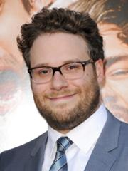

James Edward Franco is an American actor, writer, producer, director, and teacher. His first prominent acting role was the lead character Daniel Desario on the short-lived cult hit television program Freaks and Geeks. He was born April 19, 1987, he has two siblings Dave Franco and Tom Franco, and he is at the age 36.
He has a long acting career starting off with Freaks and Geeks playing as the lead character Daniel Desario and the Spiderman Trilogy as Harry Osborn (2002-2007). He is also featured in many other films such as Flyboys (2006), Pineaplle Express (2008), Milk (2008), 127 Hours (2008), Rise of the Planet of the Apes (2011), Oz the Great and Pwerful (2013), Spring Breakers (2013), This is the End (2013), and The Interview (2014).
Seth Aaron Rogan is a Canadian actor, screenwriter, producer, director, and comedian. He was born April 15, 1982, he has a sister named Danya Rogan,and his spouses name is Lauren Miller. Rogan began his career performing stand-up comedy during his teenage years, winning the Vancouver Amateur Comedy Contest in 1998.
He started his acting career off by landing a supporting role in the series Freaks and Geeks, but shortly after he moved to Los Angeles for his role, Freaks and Geeks was officially cancelled after one season due to low viewership. Rogan later on got a part on the equally short-lived sitcom Undeclared, which also hired him as a staff writer. Rogan was cast in a major supporting role and credited as a co-producer in Apatow's directional debut, The 40-Year-Old Virgin. Rogan and his comedy partner Evan Goldberg co-wrote the films Superbdm Pineapple Express, This is the End, and The Interview. He has also done voice acting work for the films Horoton Hears a Who!, Kung Fu Panda, Monsters vs. Aliens, and Paul.
Randall Park is an American actor, comedian, writer, and director. He was born March 23 1974 in Los Angeles.
Park made his acting Debut in the 2003 short film Dragon of Love (as the main character, Joel), which won the Best SHort Film at the 2003 Hawaii International Film Festival. Park his appeared in feature films such as Larry Crowne (as Trainee Wong opposite Tom Hanks), Dinner for Schmucks (as Handerson), and The Five-Year Engagement (as Ming).